最好的建模平台
入门教程
1 AI实践算子
1.1 功能描述
AI实践算子主要是完成算子运算展示功能。用户可选择输入文件、输出文件，可设置执行时间和输出字段。AI实践算子为一元自定义算子。
1.2 用户界面
Ø AI实践算子设置
两种执行时间方式可供用户选择，若选择固定秒数，则默认执行30秒（文本框默认显示30秒，光标点击数字消失），用户也可手动输入固定执行秒数；若选择随机秒数，用户要手动输入随机区间，后台根据用户设置的秒数区间先选择随机数，再执行运算。
输出字段为复选框，可选择多个字段进行结果输出；支持用户输入查找字段，若查找到匹配项，则展示匹配结果进行勾选（遇到进行多次查找的情况时，保留之前查找勾选结果）。
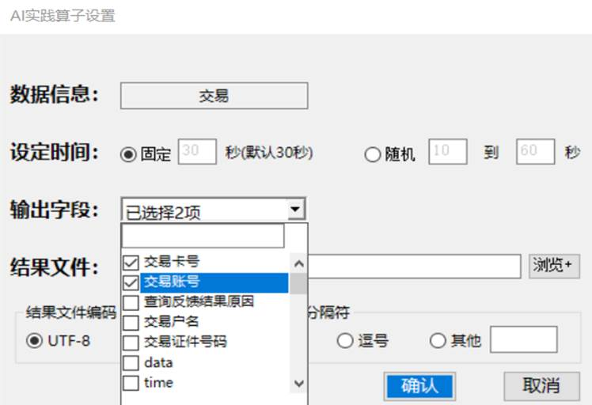
对于结果文件，用户可点击“浏览”按钮从本机中直接选择输出文件，并在文本框中显示选择文件名，还可以设置输出文件的编码格式。
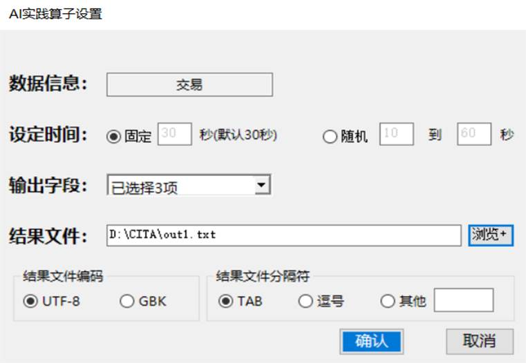
2 多源算子
2.1 功能描述
多源算子主要是完成算子运算展示功能。用户可选择输入文件、输出文件，可设置执行时间和输出字段。多源算子为二元自定义算子。
2.2 用户界面
Ø 多源算子设置
两种执行时间方式可供用户选择，若选择固定秒数，则默认执行30秒（文本框默认显示30秒，光标点击数字消失），用户也可手动输入固定执行秒数；若选择随机秒数，用户要手动输入随机区间，后台根据用户设置的秒数区间先选择随机数，再执行运算。
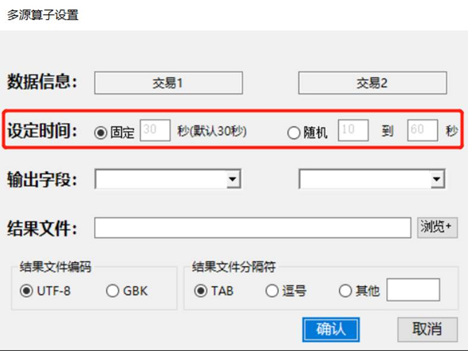
输出字段为复选框，可选择多个字段进行结果输出；支持用户输入查找字段，若查找到匹配项，则展示匹配结果进行勾选（遇到进行多次查找的情况时，保留之前查找勾选结果）。
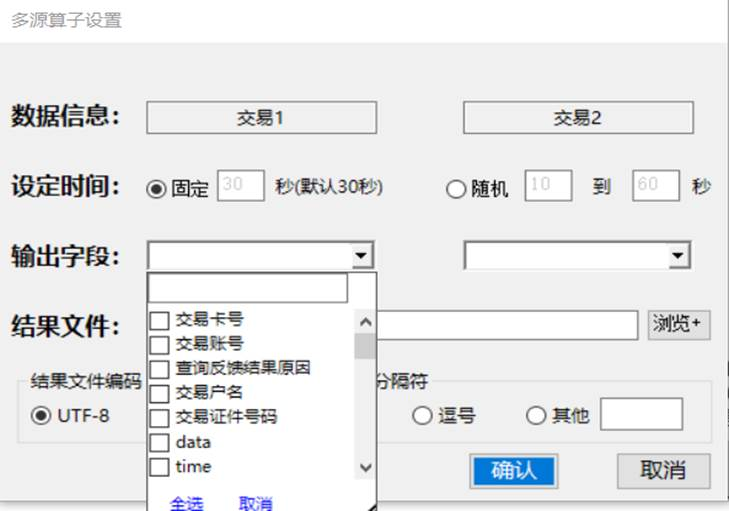
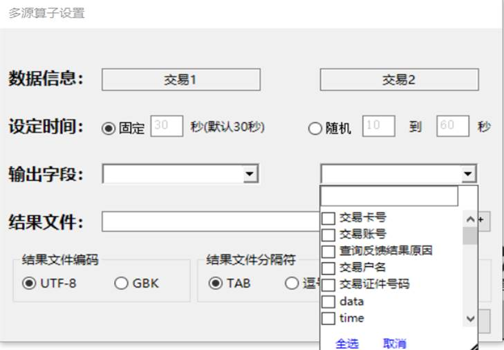
对于结果文件，用户可点击“浏览”按钮从本机中直接选择输出文件，并在文本框中显示选择文件名。
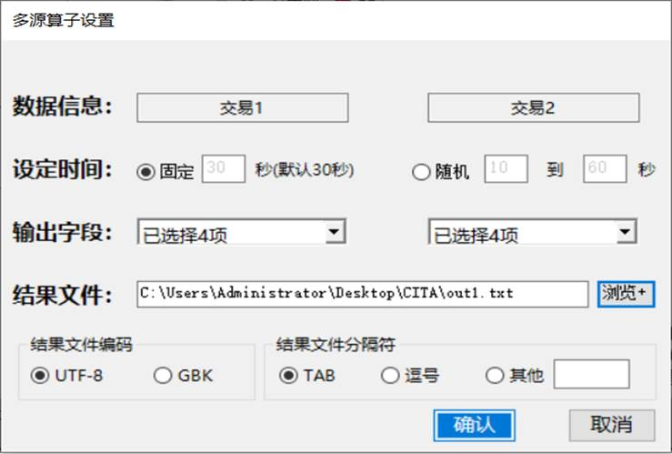
3 Python算子
3.1 功能描述
Python算子主要是用来处理原始数据较复杂，需要执行Python脚本生成结果文件的数据。，
3.2 用户界面
Ø Python算子设置
Python虚拟机选择为下拉单选框，用户在python引擎中将本机存在的Python虚拟机导入后，所有Python虚拟机可在下拉列表框中全部显示出来供用户选择。
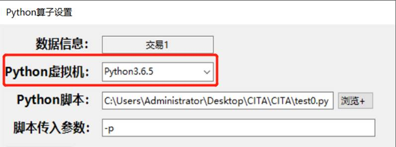
点击“浏览”按钮可选择导入需要执行的Python脚本。
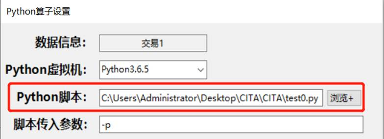
脚本传入参数中用户可添加设置其它参数，如＂-b＂、＂-o＂、＂-t＂等。
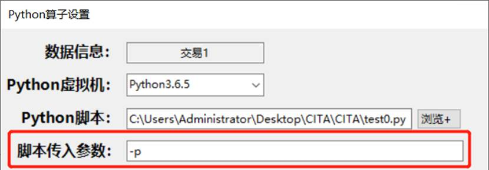
用户需要分别对输入文件和输出结果文件进行设置。
对于输入文件设置，用户有以下两种设置选择：
1. 无输入文件：脚本中已设置好输入文件的路径，可与算子连接的数据源路径不一致；
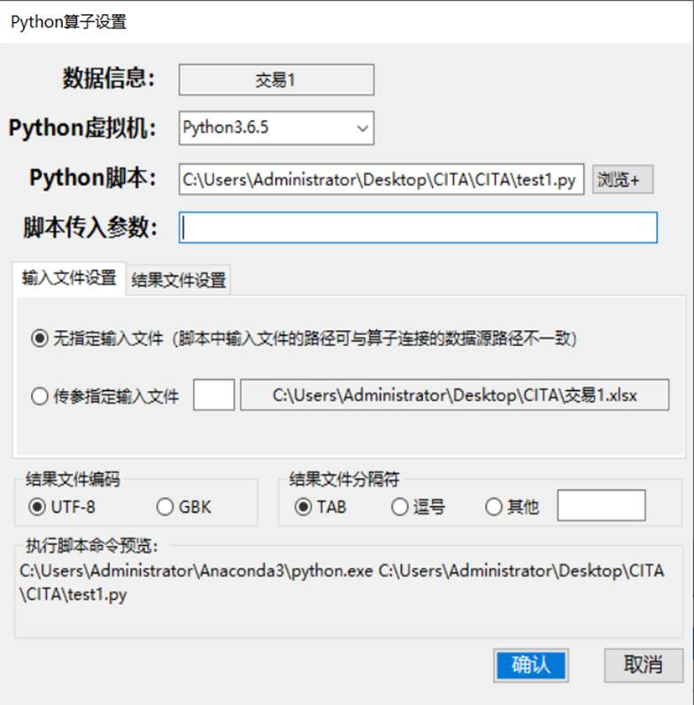
2. 传参指定输入文件：输入文件为对应连接的数据源路径信息，＂-f1＂默认指代输入文件设置参数。
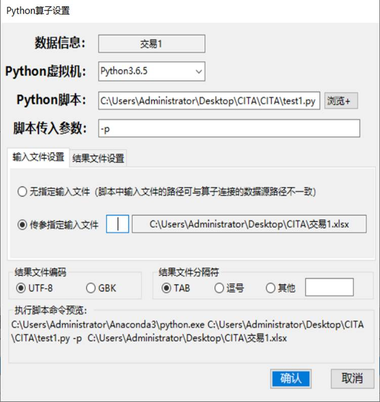
对于结果文件设置，用户有以下四种设置选择：
1. 无结果文件：Python脚本中已设置好结果文件的路径，算子连接的生成结果为空；
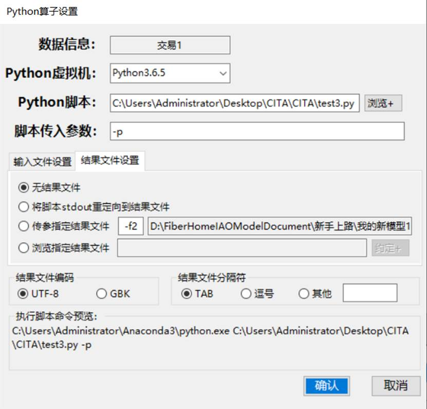
2. 将脚本stdout重定向到结果文件：Python脚本中未设置结果文件的路径，脚本执行结果会全部打印到屏幕上，可将屏幕打印结果重定向到算子连接的结果文件中；
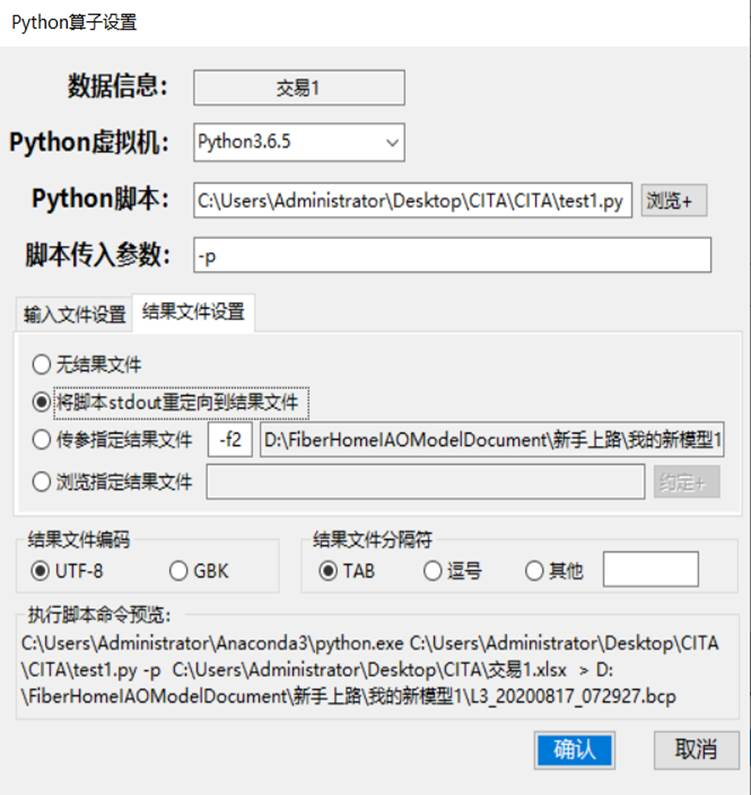
3. 传参指定结果文件：Python脚本中未设置结果文件的路径，算子连接的结果文件路径会自动显示出来，＂-f2＂默认指代输出文件设置参数，脚本执行结果也会直接存入算子连接的结果文件中。
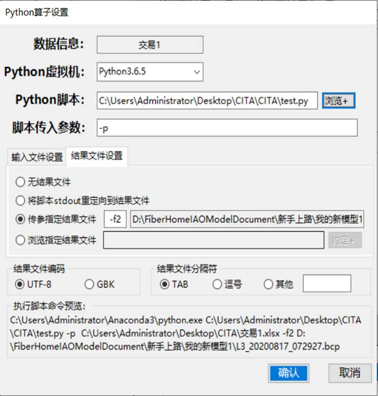
4. 浏览指定结果文件：Python脚本中已设置好结果文件的路径，执行Python脚本时在指定路径中可能会生成多个结果文件，点击“约定”按钮可从生成的多个结果文件中选择一个作为算子的生成结果，便可进行后续连接操作。
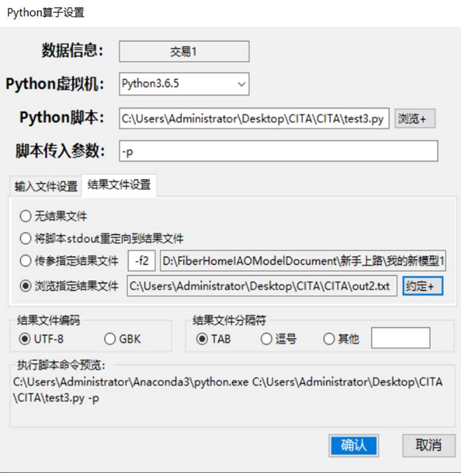
用户还可选择结果文件在数据预览中的文件编码格式和文件分隔符，避免数据预览过程中数据出现乱码的情况，并对数据展示格式进行规整。
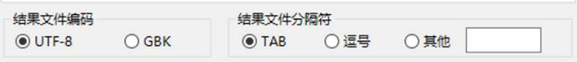
根据用户以上对Python脚本的选择设置，自动生成脚本执行命令在执行脚本命令预览框中。
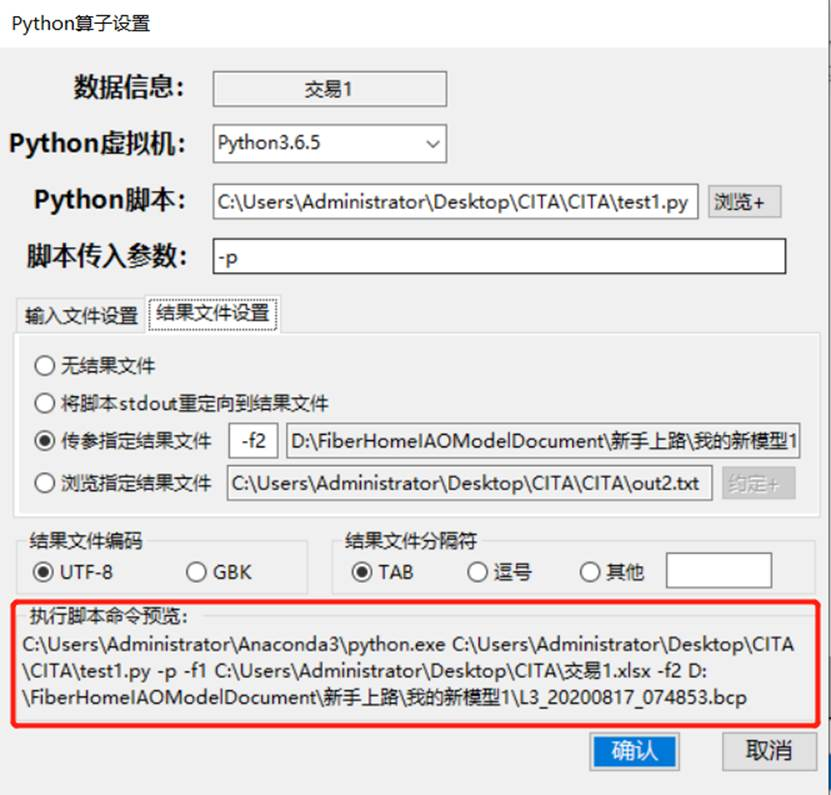